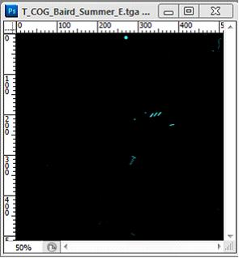
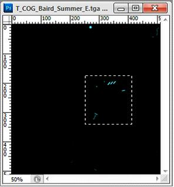
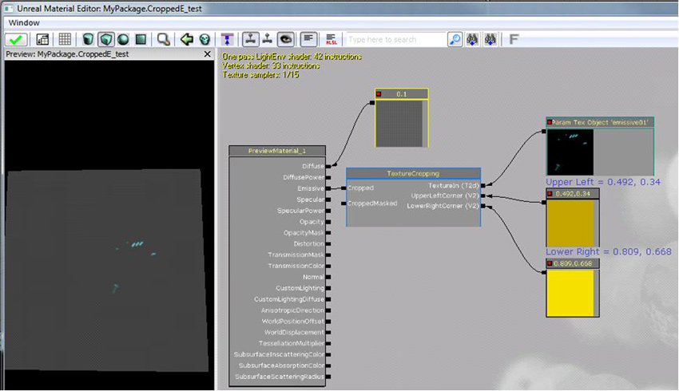

UDN
Search public documentation:
CroppedEmissiveAssistantCH
English Translation
日本語訳
한국어
Interested in the Unreal Engine?
Visit the Unreal Technology site.
Looking for jobs and company info?
Check out the Epic games site.
Questions about support via UDN?
Contact the UDN Staff
日本語訳
한국어
Interested in the Unreal Engine?
Visit the Unreal Technology site.
Looking for jobs and company info?
Check out the Epic games site.
Questions about support via UDN?
Contact the UDN Staff
UE3主页 > 材质& 贴图 >Cropped Emissive Assistant（剪裁自发光贴图辅助工具）
UE3 主页 > 贴图美工人员 > Cropped Emissive Assistant（剪裁自发光贴图辅助工具）
UE3 Home > FX 美工人员 > Cropped Emissive Assistant（剪裁自发光贴图辅助工具）
UE3 主页 > 贴图美工人员 > Cropped Emissive Assistant（剪裁自发光贴图辅助工具）
UE3 Home > FX 美工人员 > Cropped Emissive Assistant（剪裁自发光贴图辅助工具）
Cropped Emissive Assistant（剪裁自发光贴图辅助工具）
概述
安装
- 下载并安装Adobe AIR或Adobe Configurator。Adobe AIR是所需的插件。Configurator是个允许您创建自定义面板的Photoshop工具。
- 在这里下载该工具： Crop_EAssist_Panel.zip
- 导航到： [Photoshop Installation Path]\Plug-Ins\Panels 并复制
Crop_E Assist文件夹到您所使用的Photoshop版本的 \Plug-ins\Panels\ 文件夹。 - 如果Photoshop正在运行，那么重新启动它。一旦重新启动后，跳转到 Window > Extensions > Crop_E Assist 来打开该面板。

剪裁工作流程
- 打开您的自发光材质，或者使得那个图层组在PSD中可见。该脚本可以处理所有类型的文件，您可以使用PSD文件或者保存的 _E tga格式。在这个过程中将会创建一alpha通道来保存选项。

- 区域选择您想剪辑的自发光贴图的区域。选中部分不一定必须是正方形，其大小也不一定是2的幂数；您可以在任何需要的维度上选中您需要的区域。贴图将会自动将尺寸调整为正方形及2的幂数。

- 按下 Crop Emissive(剪裁自发光贴图) 按钮。

- 如果自动尺寸和您需要的不符将会首先提示您手动地调整图片的大小。如果符合要求，可以按下cancel (取消)或OK（确定）。
- 接下来，将会出现Save As（另存为）对话框。如果您将文件保存为PSD格式(该格式可以导入到引擎中)，它将会存储坐标作为以后的参考。否则，TGA或PNG格式就可以! 保存的贴图：

- 最后，将会弹出一个警告，显示了Material Function所需的数值。除非您给着色器输入了值否则请不要关闭这个窗口!
注意: 如果您将文件保存为PSD文件，那么这些值作为文件的标题进行存储， 通过File（文件） > File Info（文件信息）或ctrl-alt-shift i，以便供以后参考。

设置材质
- 使用 Cropped Emissive Assistant导入Photoshop保存的剪辑贴图。
- 打开贴图的属性(双击贴图)，并设置 Address X/Y 属性为 Clamp 。
- 给材质添加Material Function:
Engine_MaterialFunctions01.Texturing.TextureCropping - 添加一个TextureObjectParameter表达式和2个Constant2Vectors。将导入的贴图分配给TextureObjectParameter表达式。
- 将TextureObjectParameter的输出端连接到MaterialFunction的 TextureIn 输入端，并将Constant2Vectors的输出端连接到 UpperLeft 和 LowerRight 输入端。
- 在Photoshop中从警告信息中输入值。

- 将MaterialFunction的需要的输出端连接到其他材质。
缺陷/已知问题/限制
- 每次点击Crop_E Assist面板上的按钮都会创建一个新的alpha通道，目前需要手动地将其进行清除。
- 如果由于文件正在打开等原因导致保存失败，那么它将保持关闭并需要重新运行。
- 请不要将贴图尺寸重新调整为 2:1 的比例, 仅能调整为1:1的比例。